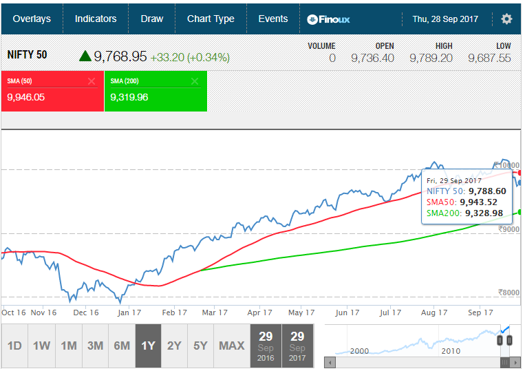
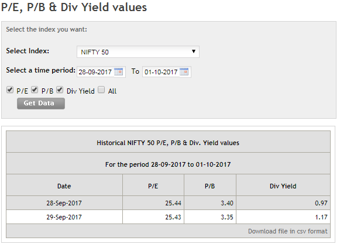

The first thing to understand is whether the Indian markets are in a bear phase.
There are two ways to figure this out – Technical and Fundamental. Let’s analyze each.
A. TECHNICAL ANALYSIS OF NIFTY AS ON 1 OCTOBER 2017
Chartists can easily figure out if any Index or stock has entered the bear phase. All they do is check the CMP relative to the 50-day and the 200-day moving average.
If the CMP falls below both averages, it’s a bear market.
Let’s see what the Nifty is up to.

As on 29 September 2017, Nifty has pierced (downward) the 50-day MA, but is still comfortably above the 200 DMA. Therefore, as per technicals, we can only say that the Nifty is being hammered by operators and algorithms, and maybe the trend will continue.
This makes for a bearish phase in a bull market BUT it is not a full blown bear market.
If the Nifty smashes the 200-DMA support on the way down, and hangs around for a few sessions, then it can be said we have entered a bear market, and this is something time will tell.
If Nifty breaks out – convincingly – of 9945 we might be headed back to 10k levels, perhaps 10,150.
If it breaks down – again, convincingly – from 9330 levels, we will enter a bear market. If it breaks 9,330 (convincingly) we will be headed much lower.
What we will experience in between is a bearish phase in a bull market.
Now here’s one more thing. 10,150 is a top. If Nifty crosses it convincingly (3-4 sessions around or above this level), it will head to 11,500.
B. FUNDAMENTAL ANALYSIS OF INDIAN ECONOMY AS ON 1 OCT 2017
Though bad economic news gets reflected in price way earlier than the figures are published, it is obvious that Nifty is out of step with fundamentals.
Demo and the hassles caused by GST have slowed down the economy and therefore let’s do a check on how the economy stands on fundamentals:
1. EMPLOYMENT (-VE): Though there is no proper sector-wise job data available in India, we have seen the IT majors sack many coders. I live in Mohali which is full of small IT companies, and I can confidently say that quite a few are in trouble.
Second, the informal sector that has been hit by the twin economic shocks of demo and improper GST execution will obviously shed jobs.
Automation and AI too is hitting other jobs in sectors like banking and other conventional businesses.
2. ASSET PRICES (Neutral to -VE): Real estate, which was the a critical refuge of black money, is in the doldrums. Traditional investors in real estate are now moving into stock markets and other financial instruments.
New real estate projects were very few and far in between – a sure sign of a recessionary trend in real estate. What this implies is builders are saddled with excess inventory, and only when a good part of that clears will there be some revival.
Though this evens out the asset price drop impact, but any drop in the stock prices could drag this indicator into the red. If markets fall, the traditional safe havens (gold, silver, government saving schemes, quality corporate bonds) will come into play.
3. STRESSED CORPORATE DEBT (-VE): Most of us know that the debt repayment stress levels are high. This is why there’s such a clamour for interest rate drops. A couple of days back SEBI dropped a proposal that mandated corporates to declare if they had defaulted on loan repayments, even if it were for a day.
4. CAPACITY UTILIZATION/PRIVATE INVESTMENT (-VE to Neutral): Private investment is not picking up mainly because the existing capacities are not operating at 100%, which is because demand is insufficient.
Yes, this is a vicious cycle but the ray of hope is that India with its population is a consumption story and sooner or later demand will revive and capacities will be added. It may take a year or so, but we’ll get there.
5. AVERAGE HOURLY EARNING: There is no data available for this, hence cannot comment.
6. CONSUMER GOODS AND MATERIALS DEMAND (Neutral to -VE to Positive): This variable is directly linked to the GDP which has slowed down. The 5.7% growth includes many winners and many losers. So by and large, we can peg this as a neutral for now.
This factor depends on Manufacturing Index which is at an all time low.
However, until there’s clarity on GST, the GDP will continue to drift lower and then revive maybe by the 1st quarter of 2018 after it is simplified and rationalized.
7. BALANCE OF TRADE (-VE): As per a government press release, exports grew 4.34% and imports by 21.68% in the period April-August 2017. In September we witnessed:
a. That despite an increase in imports the manufacturing index slipped badly. This implies that gold and defense related imports rose, which did not get channelized into production activity.
b. The $ rose against the Rupee.
c. The price of oil jumped from $50/barrel to $ 58/barrel.
Al these are negative factors.
8. CORPORATE PROFITABILITY (-VE to +VE) : GST destocking and muted demand due to demonetisation has kept corporates earnings in the dark. It is also possible that the 2nd quarter of 2017-18 will be muted. However, chances are that recovery will start by March 2018.
9. NIFTY PE, PB AND YIELD (-VE) : Though markets have been overpriced for a long time now, factors like PE/PB etc., are usually discussed when the market softens. That said, take a look at the figures — which indicate that the market is overpriced:

10. $ RATE (-VE): The $ rate is rising like a gas balloon. You have seen earlier that our imports are rising at a faster pace than our exports. Plus, FIIs are pulling out money. This can spiral out of control and if the Re falls to 67-68, our balance of payments controls will come unhinged.
These are more or less the major fundamental indicators that are sounding very poor at the moment. A full blown recovery also seems at a distance and as such, the fundamental factors seem more negative than the technical charts.
SUGGESTIONS TO GOVERNMENT FOR TACKLING ECONOMIC SLUMP
So far, we are in a bearish phase of a long term bull market. But the government must not allow this period to degenerate into a full blown bear market.
So, what are the steps that the government should take. Here are some suggestions:
- Any fiscal stimulus must be in the form of tax incentives that can help revive the animal spirits of the private sector – for example, tax holidays for new units, employment-related incentives, etc.
- Rate cut. Though many experts are of the opinion that the RBI may pause this time, the RBI actually should go ahead and announce a cut. Pushing things under the carpet will not help.
- Tax cuts now, without pushing these to the budget date.
- GST simplification. This must be done immediately as of yesterday. Fewer rates, 1 return per month, reduction of rates for deserving products.
- NPA resolution. This too must be fixed immediately.
- Fixing rural distress. This too should be done on priority.
- Speeding up infra projects, including the Africa and Thailand Roads that are in some state of progress.
CONCLUSION
Though the market is in a dicey state, immediate and positive action by the government can help turn things around. But for this, we need quick and decisive action. The results of the GST meeting on 6 October will help us understand which way the market is headed.
Until then, keep the following factors in mind:
- There may be a bounce till 9950.
- If government moves fast and is positive, then the market will not react much.
- If not, then these are chances that the markets may dip to around 9350.
- If things turn and if Nifty crosses 10,150 decisively and stays put for a few days, ten we’re headed to new highs.
Till things clear, stay light.
Be the first to comment on "Is The Indian Stock Market in a Bear Phase?"